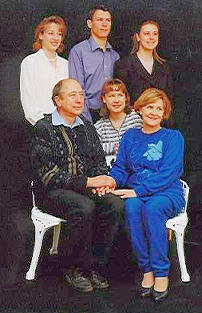

|
Indeks: |
Hierdie is die kortste Nuusbrief, met die minste inligting, wat ons sedert die ontstaan van die Familiebond gedurende 1984, uitgereik het. Dit kan aan twee redes toegeskryf word: Eerstens - ons het bykans geen inligting van ons lede ontvang of in die koerante opgespoor nie en tweedens, die belangrikste rede, omdat die redakteur sedert April ongesteld is.
Bondsekretaris, Olivier Henning het gedurende die eerste week van April skielik ervaar dat sy voete en hande dood voel. Binne 'n dag of twee het hy alle krag in sy bene en arms verloor - tot so 'n mate dat sy bene eenvoudig geswik het die oomblik as hy 'n trappie op of af wou klim. "Elektriese skokke" het deur sy liggaam begin flits.
Aanvanklik het die dokters getwyfel wat hom makeer, maar na bykans 'n maand en intensiewe toetse is vasgestel dat hy 'n perifere neuropathie het, d.w.s die senuweestelsel na die liggaam en ledemate is beskadig. Die toetse wat gedoen is kon egter nie die oorsaak van die toestand vasstel nie. Daar bestaan ook nie regtig behandeling vir die toestand nie - slegs medikasie om 'n bietjie verligting te bring en om mens te laat slaap, want die toestand (elektriese skokke) vererger wanneer mens lê.
Gedurende hierdie tyd het hy ook begin ervaar dat sy lugpyp van tyd tot tyd in 'n spasma gaan, en hy dan geen lug kan inasem of uitblaas nie. Dit was 'n lewensbedreigende situasie wat hy slegs oorkom het deur absoluut kalm te bly en dan, net voordat hy flou word, 'n klein bietjie lug kon inasem.
Vir 'n tydland was Olivier bykans hulpeloos en kon hy slegs lê of in 'n stoel sit. Sy hele liggaam en sy tande fibreer egter permanent. Hy het egter begin om sy bene en arms te oefen, totdat hy kon voel dat daar verbetering intree. Hierna het hy begin stap en 'n oefenfiets trap - hoe moeilik dit ookal is. Aangesien hy ook ervaar dat hy nie behoorlik kan konsentreer nie, het hy begin om nie-fiksie boeke te lees en "sudoku's" in te vul. Boeke soos Hermann Giliomee se "Die Afrikaners" en Gideon Joubert se "Die Groot Gedagte" tel onder die boeke wat hy kon lees. Om vir die eerste keer in gewone goeie Afrikaans te lees van Einstein se "Relatiwiteitsteorie" en die Kwantumfisika (en dit op 'n manier te verstaan!) was 'n wonderlike ervaring. Weens die bohaai oor Dan Brown se "Da Vinci Code" het Olivier ook hierdie spannende boek verslind - wat op die ou einde maar net 'n "ou storieboekie" blyk te gewees het.
Intussen het Olivier ook begin om behandeling te ondergaan by 'n Chinese akupunktuurkliniek. Na ses behandelings kon hy beslis verbetering in sy fisiese en psigiese toestand ervaar.
In die laaste week van Julie, na intensiewe neurologiese toetse by Grootte Schuurhospitaal, kon daar vasgestel word dat Olivier 'n Guillain Barré Sindroom onder lede het. Die feit dat hy reeds groot verbetering in die krag in sy bene en arms ervaar, is egter baie bemoedigend en bestaan daar goeie hoop dat hy volkome sal herstel - hoewel dit selfs jare lank kan duur. Hy probeer om sy kop skoon - en sy liggaam aanmekaar te hou. Hy sien uit na die dag wat hy op normale wyse sy dagtaak kan uitvoer.
Afgesien van lees, sudokus invul en oefen het hy gedurende hierdie moeilike tyd darem ook aan 'n paar Familiebond sake aandag gegee.
* Gaan kyk gerus hoe die Henning webwerf op Internet tans lyk - www.henning.org. Tussen Olivier en Jannetta Lewis, webmeester van die Familiebond webwerf, is talle groot verbeterings oor die afgelope drie maande aangebring. Ons is in die gelukkige posisie dat Jannetta tans besig is met haar Meestersgraadstudies in Rekenaarwetenskap en baie van haar kennis op ons webwerf toepas. Dan het Prof Peter Henning van die Departement Rekenaarwetenskap aan die Karlsruhe Universiteit in Duitsland ook begin om ons by te staan. Tussen hom en Jannetta is hulle besig om ons databasis so uit te brei dat dit internasionaal van groot waarde gaan wees.
* Olivier het op die webwerf van die adelike Duitse familie "Von Kleist" afgekom en agtergekom dat daar heelwat verwysings na Henning families voorkom. Ongelukkig sal dit intensiewe navorsing verg om hierdie Hennings positief te identifiseer. Die belangrikste ontdekking was egter 'n inskrywing in 'n boek "Geschichte des Geshlechts von Kleist wat gedurende 1885 gepubliseer is. Een van die inskrywings handel oor 'n kooptransaksie op 1 September 1690 tussen Ewald Jochim von Kleist en die broers Jochim Daniel - , Dinnies Christoph -, Peter Heinrich-, en Caspar Henning. Verderaan in die teks word die naam van die derde broer as Peter Hinrich aangedui. Dit is die persoon waaroor ons so opgewonde raak.
Ons stamvader, Peter Henrich Henning is gedurende 1740 gebore en ons weet dat sy vader, Johannes Gerhard in 1727 'n burger van Lippstadt geword het en dat sy eerste kind gedurende 1730 gebore is. Volgens berekeninge wat ons gemaak het, kon Johannes Gerhard tussen 1690 en 1710 gebore gewees het. Hoewel Peter Henrich slegs die vyfde seun (sewende kind) van Johannes Gerhard was, bestaan daar die moontlikheid dat hy hierdie vyfde seun eers na sy pa vernoem het. As ons berekening oor Johannes Gerhard se geboortedatum korrek is en hy het eers sy vyfde seun na sy pa vernoem, bestaan die moontlikheid dat hy die seun van bogemelde Peter Heinrich (Hinrich) Henning kon gewees het.
Ons sal mettertyd probeer om hierdie geheim verder te ontrafel.
* Uitgawe no 2 van 2006 van die Henning Familiekroniek op laserskyf het ook gedurende die afgelope drie maande die lig gesien.
* Ons kon die finansiële state vir die jaar 2005 finaliseer en ons boeke laat oudit. Diegene wat graag insae in die finansiële state wil hê, kan die Bondsekretaris kontak en hy sal reël dat 'n afskrif aan u gestuur word. Ons is trots daarop om aan te kondig dat dit goed gaan met die Familiebond se finasies - alles danksy ons lede wat so mooi en so gereeld bydraes lewer.

Ons vermeld graag die name van lede wat donasies van R200.00 en meer aan die Familiebond gemaak het. Oor die afgelope drie maande het slegs een lid - 'n Lewenslange lid - mev Ellen Naudé (gebore Henning) van Rosslynn naby Pretoria 'n donasie van R200.00 in die Familiebond se rekening inbetaal.
Ons sê ook dankie aan Dr Nico Henning van Centurion en Henning Pieterse van Rietvalleipark, Pretoria wat steeds voortgaan om maandeliks per debietorder bydraes te lewer. 'n Klein bedraggie per maand (waarop ons kan staatmaak) is vir ons baie meer werd as een eenmalige groter bydrae. Ons glo ook dat dit makliker vir ons lede is om liewer op gereelde grondslag klein bydraes te lewer as een grote.
Op 12 Mei 2006 het iemand by die ABSA Bank tak te Hercules, Pretoria 'n bedrag van R100.00 in die Familiebond se rekening gedeponeer, sonder om sy of haar naam of lidnommer te verstrek. Dit maak dit natuurlik onmoontlik vir ons om hierdie persoon te identifiseer. Laat weet asseblief vir ons wie u is. Baie dankie vir die deposito.
Ongelukkig is daar nog verskeie lede wat geen bydrae vir 2006 gemaak het nie.

Ons het met leedwese kennis geneem van die afsterwe van die volgende Hennings:
b7.c8.d8.e8 Daphné Harker (gebore Henning) *7-4-1918 is oorlede op 24 Junie 2006 te Pinetown. Tannie Daphné was die heel laaste oorlewende lid van die vyfde geslag Henning nasate van die stamvader, Peter Henrich Henning. Daar is verskeie ander Hennings wat ouer as sy is, maar hulle is van die sesde of sewende geslag nasate. Tannie Daphné was ook 'n baie trotse, erelid van die Familiebond. Hoewel dit nie van haar verwag is nie, het sy elke jaar gedurende Februarie vir ons 'n donasie van R200.00 aangestuur.
b1.c3.d10.e10.f5. Jan Hendrik Henning *5-7-1916 is oorlede op 28-6-2006 te Bethal. Hy sou hierdie jaar 90 jaar oud geword het. Hy was ongelukkig nie lid van die Familiebond gewees nie.

Marita Henning (gebore Van Aarde) *6-6-1943, eggenote van b1.c3.d7.e9.f1.g2. Nicolaas Johannes Henning is op 14-7-2006 oorlede. Nico en Marita was vir baie jare lank, terwyl die bestuur van die Familiebond in Pretoria gesetel was, van ons steunpilare.
Nico en Marita Henning en hul vier kinders 'n paar jaar gelede. Agter: Wilma, Danie en Marné. Tussen Nico en Marita is Zelda.